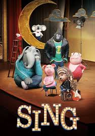

 |
SinopsisBuster Moon ama su teatro y es capaz de cualquier cosa para salvarlo. Sabe que su sueño está a punto de desaparecer y solo tiene una oportunidad: organizar el concurso de canto más grande del mundo. Tras varias etapas, quedan 5 finalistas: Mike, un ratón con voz suave; Meena, una elefanta adolescente con miedo escénico; Rosita, la exhausta madre de 25 cerditos; Johnny, un joven gorila mafioso; y Ash, una puercoespín punk-rock que quiere deshacerse de su arrogante novio y cantar en solitario.
110 minutos
PG
|